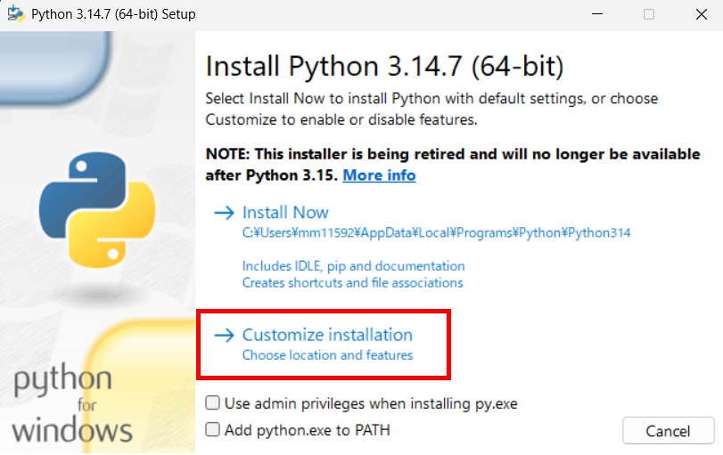
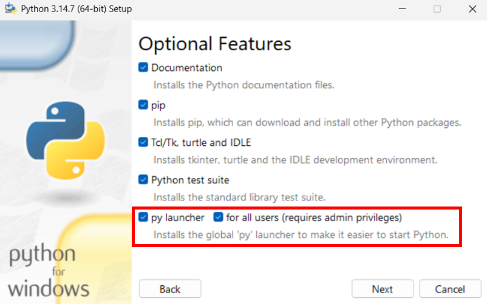
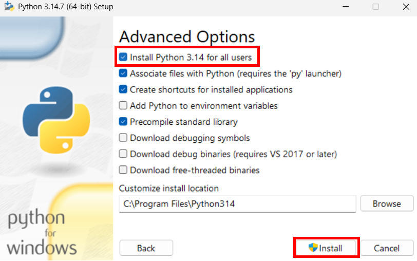

Install Python
Download the Windows 64-bit installer for a supported Python version (3.10 to 3.14) and run it.
For a shared PC, install Python for all users so that the py command is
available when the PyFemtet setup script is run with administrator privileges.

Open the Downloads menu and select Windows. Download the installer for the required Python version.
In the first installer window, select Customize installation.

On the Optional Features screen, ensure that py launcher is selected. Select for all users (requires admin privileges), then select Next.

On the Advanced Options screen, select Install Python <version> for all users, then select Install.

Check the Installation of Python
If you want to check the installation later, please follow the steps below.
Press the Windows key and open the Command Prompt.

Run
py --version.Confirm that a supported Python version (3.10 to 3.14) is displayed.
If no version is displayed, run the command from a Command Prompt with administrator privileges and confirm that Python was installed for all users. If you see the message
'py' is not recognized as an internal or external command, operable program or batch file., Python may not be installed.